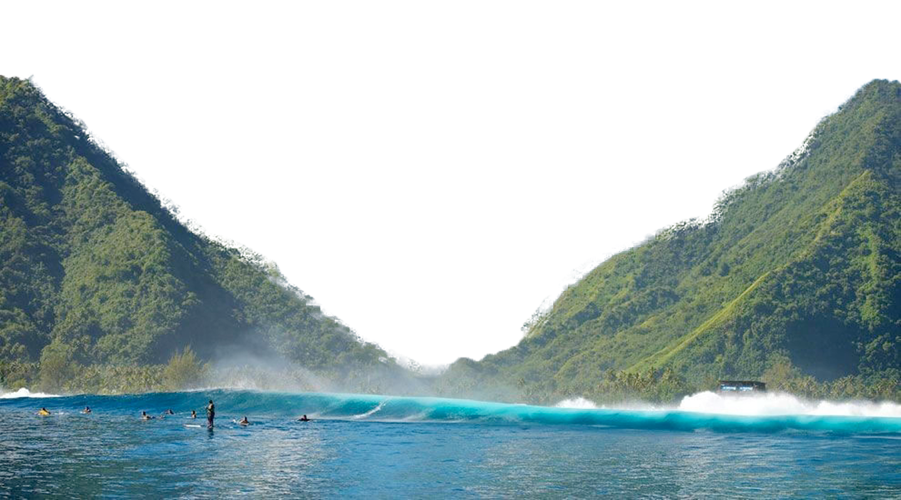

POLYNÉSIE

Immersion totale pour voir la grande faune (requins, raies mantas, napoléons) dans une visibilité exceptionnelle. Idéal pour les baptêmes ou les plongées dérivantes.

Rencontre réglementée et émouvante avec les baleines à bosse qui migrent dans les eaux chaudes pour se reproduire. Possible de les observer en surface et parfois de nager à proximité.
Exploration facile des Jardins de Corail et lagons clairs. Nagez en surface avec poissons tropicaux, tortues, raies et requins inoffensifs, accessible à tous.
Cette excursion permet de pénétrer au cœur des îles par des pistes escarpées, inaccessibles aux véhicules classiques. Le 4x4 vous emmène vers des points de vue spectaculaires, des champs d'ananas, et des cratères volcaniques, avec les explications d'un guide local.
C'est une immersion sensorielle où vous apprenez les étapes complexes et manuelles de la culture de la Vanille de Tahïti, de la pollinisation délicate à la préparation et au séchage des gousses, le tout dans un parfum enivrant.
Cette activité explore l'intérieur des îles hautes (volcaniques) comme Tahiti et Moorea. Il s'agit de traverser des forêts luxuriantes, d'atteindre des cascades spectaculaires ou de grimper vers des belvédèresoffrant des vues panoramiques sur les lagons et les baies.
Pour les voyages de noces, couples, amateurs de luxe et de détente
Pour les plongeurs certifiés, amateurs de snorkeling, chercheurs d'authenticité
Pour les amateurs de culture, randonneurs, voyageurs en quête d'authenticité et de nature